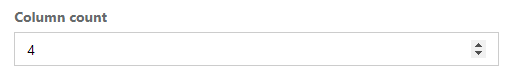
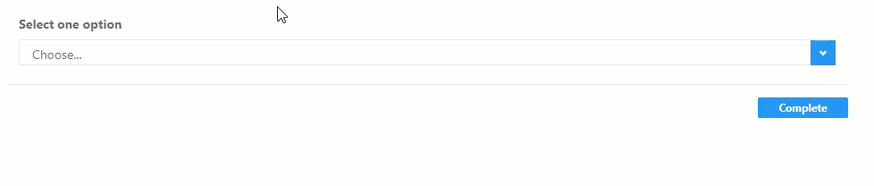
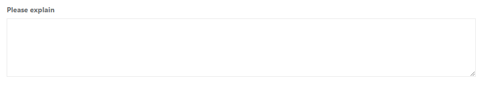
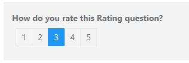
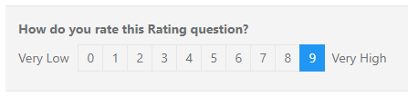
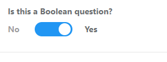
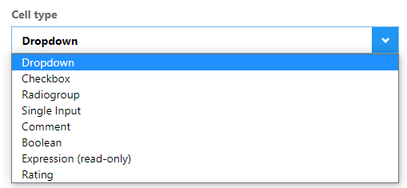
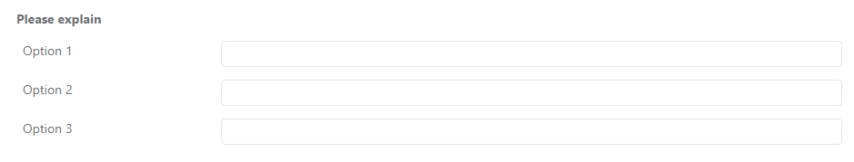

Single question entry for text, e-mail, date and so on. Adjust the possible input via Properties > General > Input Type.
Here is an example:

Multiple choice question. Custodian is able to select one or more answers to a question.
Adjust the number of columns via Properties > Layout > Column count.

Here is an example:

Single choice question. Custodian can select only one answer.
Here is an example:
Question with dropdown choices. The custodian can select one option from the dropdown menu.
Here is an example:

Question with a multiline textbox. This enables custodians to give a longer answer.
Here is an example:

Question where a rating can be chosen. This rating can be adjusted via Properties > Rate Values.
Here are two examples:


Question with yes/no or true/false choice. Adjust No/Yes via Properties > Data (Value True/Value False).
Here is an example:

A read-only question. Custodians cannot answer this question. Use this question to calculate the combined results of other questions based on an expression (Properties > General > Expression):

Here is an example based on the expression used above:

Simple matrix question, only one choice per row.
Here is an example:

Matrix dropdown question. You may use a dropdown, checkbox, radiogroup, text, comment and others question types as cell editors (via Properties > General > Cell type):

Here is an example:

Matrix dynamic question. You may use a dropdown, checkbox, radiogroup, text and comment questions as cell editors. An end-user may dynamically add/remove rows, unlike in matrix single or multiple choice question.
Here is an example:

Multiple text question. Several text inputs in one question can be placed in one or several columns.
The custodian is able to give a long answer over multiple lines.
Here is an example:
